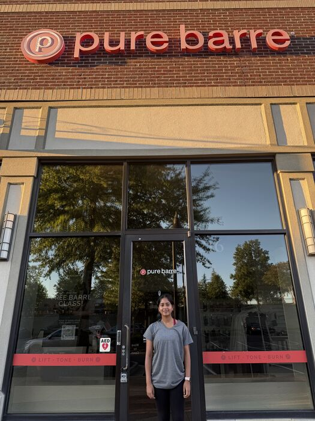
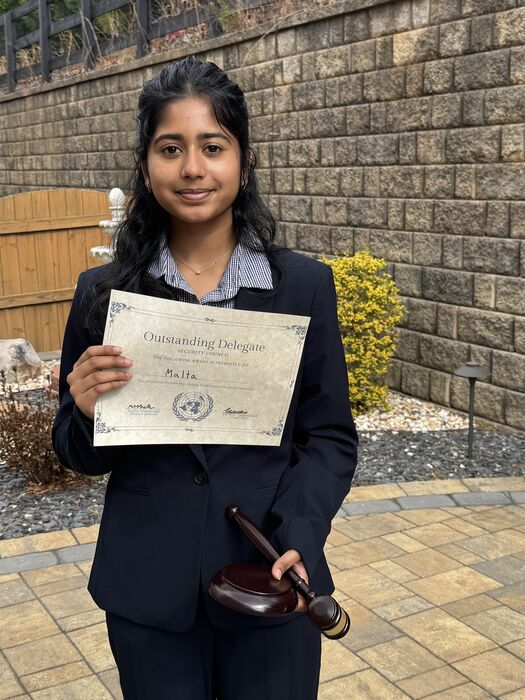
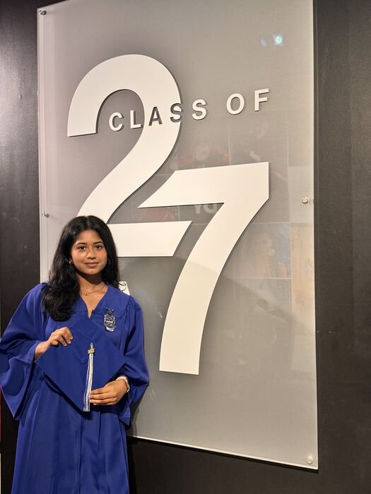
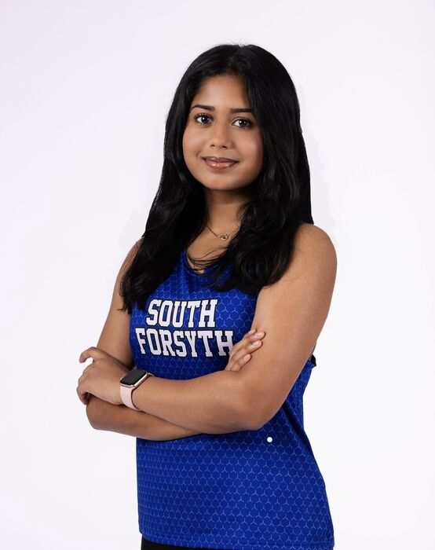
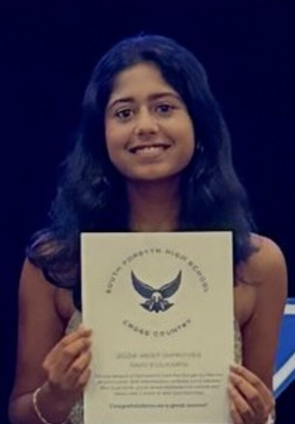
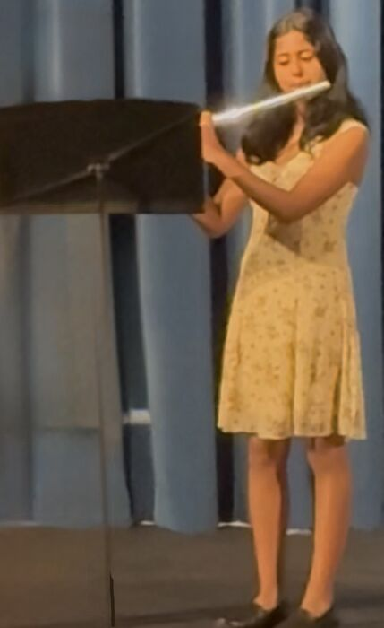
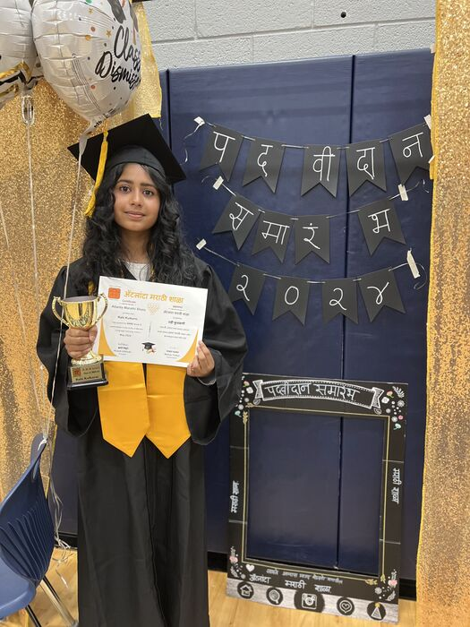
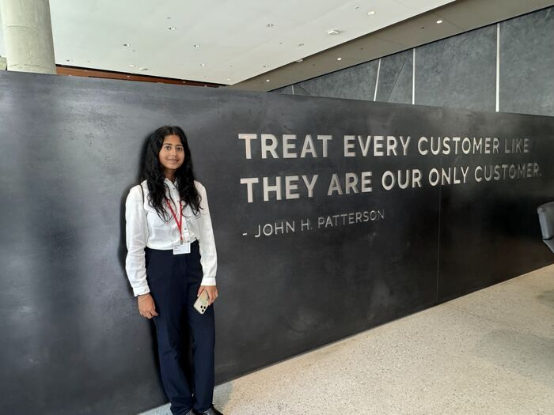
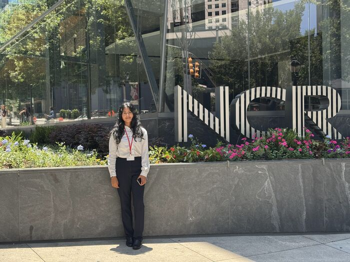

Future finance major. Varsity runner. Flutist. Founder of SeniorScam Guard.
I'm a senior at South Forsyth High School planning to study finance. Most of what I know about business I learned by doing it: selling memberships at a fitness studio, managing a club budget, running operations for a free coding program, and teaching seniors how to spot financial scams.
150+students in CyberIQ Hub's free coding program, up from 10
$10KModel UN budget managed each year
+150%Model UN membership growth, from 20 to 50 members
30+clients booked as a sales intern at Pure Barre
60+middle school students reached through Women of STEM workshops
40+underserved students tutored as an AmeriCorps volunteer
11AP courses, with AP Scholar with Distinction
3varsity cross country seasons, each as a state team qualifier
what I've built and led
Leadership and work
One paid job, one program I started, and three student organizations I help run.
2026 to present
Sales Lead Intern (Paid)
Pure Barre, Cumming
Trained in sales at a boutique fitness studio in a chain of about 600 locations. I sell memberships and class packages, including the $297 summer special, and have booked 30+ clients through outreach and one-on-one plan recommendations.
I process payments and run studio operations on my own during solo shifts.

my studio in Cumming
2025 to present
Co-President
Women of STEM
I co-lead monthly STEM workshops at two middle schools, pairing hands-on experiments with women role models in science, and oversee our digital outreach and partnerships.
60+students across 10+ workshops
2026
Founder
SeniorScam Guard
yoursafetymatters.github.io/SeniorScamGuard
I started a free fraud-awareness program for senior citizens. I researched common financial scams, taught 10 seniors how to recognize them and protect their savings, and wrote 3 newsletters on fraud prevention.
I also built the program's website, which explains six common scams in plain language and invites seniors to free sessions.
CyberIQ Hub is a free, student-run program that teaches coding and cybersecurity to students ages 10 to 18. I reworked its scheduling and logistics as it grew from 10 to 150+ students, and recruited and coordinated 10+ tutors who have delivered 120+ hours of instruction.
I coordinate four annual conferences at UGA, Georgia Tech, Emory, and South Forsyth, and manage the club's $10K budget.
Through student outreach, membership grew from 20 to 50.
20 → 50Model UN members

Outstanding Delegate, 11th grade (2025)
in the classroom
Academics
South Forsyth High School, Class of 2027.
AP Scholar with Distinction
2026, after earning AP Scholar in 2025. Eleven AP courses:
Business with Personal Finance
Macroeconomics
Microeconomics
Statistics
Pre-Calculus
Calculus AB
Calculus BC
English Language and Composition
English Literature and Composition
Human Geography
Environmental Science
Advanced Accounting Pathway
Intro to Business and Technology, Accounting I, and Accounting II, plus the NOCTI Advanced Accounting industry certification.
Dual enrollment
United States History, American Government, Business Value and You, and Humanities, with an A in each.
UGA Accelerated Business Program
2026
FBLA
8th in Future Business Educator at the region competition (2025) with a presentation on social media strategies. FBLA Statesmen Award (2025).

Class of 2027
the rest of me
Beyond the classroom

varsity XC

Most Improved, 10th grade
6 AM, six days a week
Cross country
Three-year varsity runner and three-time state team qualifier. I'm ranked among the top 14 runners on a girls' team of 40+.
I finished in the top 25 of 150+ runners at an invitational and was named Most Improved among 60+ athletes in 10th grade.

concert night
6+ years in band
Flute
I've played flute in band for more than six years and perform in three concerts a year, including one at Walt Disney World.
In the summers I volunteer as a coach at a private music school.

graduation day, 2024
eight years, 2016 to 2024
Marathi (Foreign Language)
I completed an eight-year program at Atlanta Marathi School, which is accredited by the Georgia Accrediting Commission. I passed the final written and oral exams and ranked among the top 10 graduates.

inside NCR

job shadow day
career exploration
Job shadow at NCR
Through the WIT program, I visited NCR's office for a job shadow day and saw how a large technology company works from the inside.
giving back
Service
60+hours
AmeriCorps Volunteer Tutor
Sewa International LEAD Program
I tutored 40+ underserved students in core subjects, helping them close learning gaps and build consistent study habits.
20+hours
Front Desk Volunteer
Atlanta Piano Fortissimo
I managed the front desk, scheduled appointments, assisted clients, and kept daily office operations running.